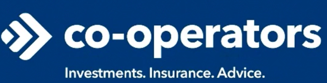

Test Automation Developer
@ Co-operators

The purpose of this webpage is to give an overview of the projects that have I worked on and the concepts that I have learned during my time working at Roche Canada (May-December 2022). I will be describing what Roche is, the goals that I set for myself during this internship, and my role in the company.
F. Hoffmann-La Roche AG, or Roche for short, is a global healthcare company that specializes in Oncology drug development. The company's headquarters are located in Basel, Switzerland, and their Canadian location is in Missisauga, Ontario.


Each clinical trial has data that must be analyzed and assessed. These processes are done using database management software and data analysis programming languages. Some examples of such tools that are used at Roche include entimICE, R, and SAS. For data visualization and presentation, Roche uses RShiny. RShiny is an R package that allows the creation of web apps that can easily display plots, listings, and tables. Currently, Roche is developing internal software to simplify tasks and processes that are required for clinical trials.
As a data science associate at Roche Canada, my responsibilities mainly consisted of the following:
Entering this co-op term, I had several goals that I wanted to achieve with regard to developing new skills and strengthening existing ones:
With regard to the specific projects that I was assigned to, I intended to achieve the following milestones:
By learning how to write deterministic tests, I improve my ability to suffieciently test code in my future projects. Creating a reproducible environment before running each test is essential to making sure that the results of one test don't affect the functionality of another test. In addition, improving my ability navigate through official documentation improves my ability to debug code and learn new concepts for any documented programming language. Lastly, learning how to create advanced RShiny plots adds complex data visualization to my skillset. This development increases the value I can add to future roles in data science.
I wanted to work with RShiny and JavaScript specifically to improve my front-end web app skills. I also requested to work with a Java project to get exposure to how back-end Java development is implemented in the industry.
Through my work with the MINT javascript and cypress codebase, I learned how to implement deterministic testing for a front end web app. I managed to achieve 100% coverage of my functionality and got all of my tests to succeed. As for using documentation, through my work, I came across many roadblocks, for which I resorted to reading official documentation. For the most part, I was able to find the solution there. If I could not find the solution there, I would post to the company forum website to see if a senior employee could help me out. In addition, since I was quite new to developing tests using cypress, I took the time to familiarize myself with cypress using its official documentation. I learned how to effectively use documentation as a starting point in learning new computer science concepts. Furthermore, due to the standardization of R Shiny web apps at Roche, the use of ggplot2 was not as necessary as it may be in open-source R programming. Nonetheless, I was able to collaborate with my co-worker to make a demo of a bar plot using ggplot2. However, for the butterfly plot, I used the Roche internal libraries instead. During the creation of these plots, we ran into several bugs, but we were able to fix them with the help of senior employees and company forum posts.
This web page provides an overview of the experience I gained through my 8 month internship at Roche Canada. Roche is a multinational pharmaceutical company that specializes on cancer drug development. Roche assigned me to a role that focuses on data science, but is flexible enough to allow me to explore a wide variety of technical projects that the company is working on. I had several learning goals when starting this position, and I had great success in acheiving them with the help of fellow employees and company tools. Overall, my time at Roche has significantly increased my value as a software developer, and that will continue to be evident throughout my career.
Throughout this internship, certain individuals went above and beyond to support and mentor me. Firstly, I want to thank my manager, Harper Forbes for showing me from the very beginning that this internship was about what I want to learn from it. This allowed me to comfortably request to work on the projects that I was particularly passionate about. I would also like to thank my project leads, Jing Jia, Javier Fernandez, Piotr Duleba, Edgar Manukyan, and Rohan Parmar for being such great mentors. The support you have all shown me throughout this internship is something that I will continue to appreciate for the rest of my career. Lastly, I want to thank all my fellow interns and colleagues for making this internship a very memorable 8 months.